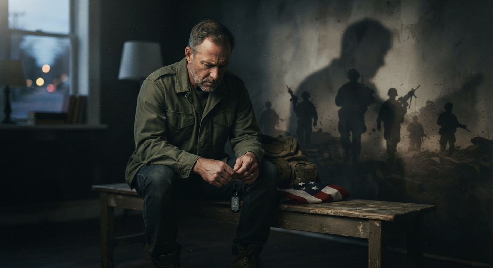

La guerra que Estados Unidos está perdiendo
Una guerra dentro de sus propias fronteras
Resumen
Un análisis sobre las consecuencias psicológicas y sociales de las guerras para los militares estadounidenses. A través de distintos períodos históricos y de datos sobre suicidios entre militares y veteranos, el texto examina el trauma, el regreso a la vida civil y los factores que no pueden explicarse únicamente por la experiencia de combate.
Palabras clave: Estados Unidos, guerras, salud mental, suicidio, veteranos, trauma, reintegración.
Estados Unidos lleva décadas enfrentándose a una guerra que, al parecer, no consigue ganar. Sin embargo, esta vez no hablamos de un conflicto contra Rusia, China o Irán, sino de una batalla que se desarrolla dentro de su propio territorio: las consecuencias psicológicas, sociales y humanas que dejan sus intervenciones militares.
Los conflictos armados no solamente dejan víctimas en los campos de batalla. También producen consecuencias que pueden prolongarse durante décadas, especialmente entre quienes participan directamente en ellos. Desde nuestra perspectiva, uno de los aspectos que merece mayor atención es el impacto que tienen las guerras sobre la salud mental de los soldados, particularmente cuando se trata de conflictos impopulares, fundamentados en argumentos cuestionables o cuyos objetivos no están suficientemente claros.
Cuando un soldado es enviado a combatir, no solamente necesita preparación física y militar. También necesita encontrar un sentido a aquello por lo que está arriesgando su vida. La legitimidad que atribuye a su misión, el respaldo de la sociedad y la percepción de estar defendiendo una causa justa pueden influir en la manera en que enfrenta las experiencias traumáticas de la guerra.
En este análisis examinaremos las consecuencias que pueden tener los conflictos militares sobre la salud mental de quienes participan en ellos, utilizando las tasas de suicidio como un indicador de una problemática mucho más amplia. También observaremos las diferencias entre distintos períodos históricos y conflictos en los que ha participado Estados Unidos.
El sentido de la guerra y sus consecuencias psicológicas
¿Por qué se suicidan las personas? Es una pregunta compleja que no admite una respuesta única. El suicidio es un fenómeno multifactorial en el que intervienen circunstancias personales, psicológicas, sociales y económicas. Sin embargo, cuando analizamos el caso de los militares estadounidenses, encontramos elementos que merecen una reflexión particular.
A primera vista, podríamos pensar que el horror de la guerra, la exposición a la violencia, la pérdida de compañeros y las experiencias traumáticas son las principales razones por las que algunos soldados terminan quitándose la vida. Sin embargo, aunque estos factores tienen una importancia considerable, el análisis no debería limitarse a ellos.
También es necesario preguntarnos qué sucede cuando un individuo regresa de una guerra y comienza a cuestionar las razones por las que fue enviado a combatir. No es lo mismo participar en un conflicto que se percibe como una defensa del propio territorio o de la población, que hacerlo en una intervención militar cuyos objetivos políticos resultan difíciles de comprender o justificar.
Esto no significa que quienes participan en guerras consideradas legítimas estén protegidos frente al trauma, ni que los soldados de conflictos impopulares necesariamente desarrollen problemas psicológicos. La experiencia de cada individuo es diferente. Sin embargo, el sentido de la misión, el respaldo social y la percepción de haber participado en una causa justa pueden influir en la manera en que una persona procesa las experiencias vividas.
La cuestión central es que el impacto de una guerra no termina cuando se firma un acuerdo, se retiran las tropas o los soldados regresan a sus hogares. En muchos casos, comienza entonces una nueva etapa de dificultades para quienes deben reincorporarse a una sociedad que no siempre comprende lo que han vivido.
Segunda Guerra Mundial y Vietnam: dos contextos diferentes
La Segunda Guerra Mundial y la guerra de Vietnam permiten observar dos contextos históricos y políticos muy distintos. En ambos casos, los soldados estadounidenses estuvieron expuestos a las condiciones extremas de un conflicto armado. Sin embargo, las razones políticas, el respaldo social y la percepción pública de ambas guerras fueron considerablemente diferentes.
Durante la Segunda Guerra Mundial, Estados Unidos participó en un conflicto contra las potencias del Eje, en un contexto marcado por la expansión del nazismo y el fascismo. La guerra contó con un amplio respaldo de la sociedad estadounidense y existía una percepción relativamente clara de los objetivos que perseguía el país.
La tasa de suicidio de la población estadounidense durante ese período fue de aproximadamente 11.2 por cada 100,000 habitantes, tomando como referencia el promedio anual entre 1941 y 1945. Además, en el Ejército activo se registró una tasa cercana a cinco suicidios por cada 100,000 militares durante 1944 y 1945, una de las más bajas de los registros históricos disponibles.
Estados Unidos perdió aproximadamente 405,399 militares durante la Segunda Guerra Mundial, por todas las causas. No obstante, no existe un registro que permita establecer con precisión cuántos de los soldados que regresaron terminaron suicidándose posteriormente. Por tanto, no sería correcto comparar directamente las muertes militares con los suicidios de los veteranos de aquella época.
El escenario de Vietnam fue diferente. Se trató de una intervención militar profundamente cuestionada por amplios sectores de la sociedad estadounidense. Los objetivos políticos y estratégicos del conflicto estaban vinculados a la lógica de la Guerra Fría y a la contención del comunismo, lo que generó una creciente oposición interna.
En esta guerra murieron 58,220 militares estadounidenses, incluyendo 47,434 por causas relacionadas directamente con el combate y 10,786 por otras causas.
Una de las consecuencias más importantes fue el regreso de miles de soldados a una sociedad dividida respecto a la guerra en la que habían participado. Muchos tuvieron que afrontar experiencias traumáticas, dificultades de adaptación y problemas de salud mental.
Sin embargo, es importante precisar que no existe un total confiable de suicidios posteriores atribuibles exclusivamente a los veteranos de Vietnam. Durante los años ochenta circuló la cifra de 50,000 suicidios, pero posteriormente fue considerada exagerada.
Los estudios sobre los veteranos desplegados en Vietnam muestran que, entre 1979 y 2019, su tasa de suicidio aumentó de 21.9 a 34.9 por cada 100,000 personas. En ese mismo período, la tasa de los hombres de la población general pasó de 25.2 a 26.4.
No obstante, al ajustar los resultados por edad, sexo, raza, origen étnico y año, no se encontró un riesgo de suicidio superior al de la población general.
¿Qué podemos interpretar de estos datos? Que el contexto social y político de una guerra merece ser estudiado, pero que no podemos atribuir automáticamente el suicidio de los veteranos a la impopularidad del conflicto. La experiencia traumática, las condiciones de regreso, el acceso a servicios de salud mental y otros factores también deben formar parte del análisis.
Irak y Afganistán: el costo humano de las guerras posteriores al 11 de septiembre
La problemática tampoco terminó con Vietnam. Las intervenciones militares de Estados Unidos en Irak y Afganistán volvieron a poner sobre la mesa las consecuencias humanas de las guerras prolongadas.
Después de los atentados del 11 de septiembre de 2001, Estados Unidos inició una serie de operaciones militares bajo el argumento de combatir el terrorismo y garantizar su seguridad nacional. Sin embargo, con el paso de los años, estas intervenciones fueron acumulando cuestionamientos relacionados con sus objetivos políticos, sus resultados y el costo humano que representaban.
Las guerras de Irak y Afganistán estuvieron marcadas por prolongados períodos de ocupación, inestabilidad política, violencia y enormes dificultades para alcanzar los objetivos inicialmente planteados.
Pero existe otra dimensión del problema que merece nuestra atención: lo que sucede con los militares cuando regresan a casa.
Desde los atentados del 11 de septiembre, se estima que 7,057 militares estadounidenses murieron durante las operaciones militares, incluyendo accidentes y enfermedades. En contraste, una estimación del impacto de estas guerras calcula que 30,177 militares en servicio activo y veteranos murieron por suicidio en los años posteriores. De esa cantidad, 22,261 eran veteranos.
Esto significa que, según dicha estimación, los suicidios superaron ampliamente las muertes registradas durante las operaciones militares.
En 2012, la tasa de suicidio entre los militares del Ejército activo alcanzó aproximadamente 29.7 por cada 100,000 integrantes.
Estas cifras revelan una dimensión preocupante del costo humano de las intervenciones militares estadounidenses. No obstante, también debemos considerar que los suicidios no se producen exclusivamente entre quienes fueron enviados a combatir. De hecho, los registros del Departamento de Defensa muestran que una proporción importante de los suicidios en servicio activo ocurre entre militares que nunca fueron desplegados en zonas de guerra.
Esto nos obliga a ampliar el análisis. No podemos explicar toda la problemática únicamente a partir de las experiencias de combate. También debemos considerar las condiciones de vida dentro de las instituciones militares, los problemas personales, la presión laboral, las dificultades familiares y el acceso a atención psicológica.
En otras palabras, el problema no está únicamente en el campo de batalla. También existen factores dentro de la propia estructura militar y en la sociedad a la que regresan sus integrantes.
¿Quiénes se están suicidando actualmente?
La dimensión del problema se hace todavía más evidente cuando observamos los datos recientes sobre suicidios entre militares y veteranos estadounidenses.
Cada año mueren por suicidio aproximadamente entre 6,400 y 6,600 veteranos. En 2024 se registraron 6,488 muertes, lo que representa casi 18 suicidios diarios.
En ese mismo año, 471 militares en servicio activo murieron por suicidio, con una tasa de 23.2 por cada 100,000 integrantes.
Las diferencias también son importantes cuando comparamos a los veteranos con la población que nunca ha pertenecido a las Fuerzas Armadas. En 2021, la tasa de suicidio entre los veteranos fue cercana a 34 por cada 100,000 personas, mientras que entre la población no veterana fue inferior a 17.
Los veteranos jóvenes, particularmente aquellos con edades entre 18 y 34 años, presentan algunas de las tasas más preocupantes. En 2022, este grupo alcanzó una tasa de 47.6 suicidios por cada 100,000 personas.
Las mujeres veteranas también enfrentan una situación especialmente preocupante. En 2022, su tasa de suicidio fue un 92 % superior a la de las mujeres que nunca habían pertenecido a las Fuerzas Armadas. Asimismo, las veteranas de entre 18 y 34 años presentaron en 2021 una probabilidad de suicidio casi 3.5 veces superior a la de sus pares civiles.
Aunque estas cifras muestran diferencias importantes entre determinados grupos, es necesario recordar que los datos incluyen a todos los veteranos y no exclusivamente a quienes participaron en una guerra específica.
Por tanto, estamos ante un problema que trasciende las consecuencias de una intervención militar particular y que debe entenderse como parte de una crisis más amplia de salud mental y bienestar social.
Una guerra que no se libra con armas
Estados Unidos dispone de uno de los ejércitos más poderosos del mundo, con una capacidad tecnológica y militar extraordinaria. Sin embargo, ese poder no necesariamente se traduce en la capacidad de atender las consecuencias humanas de sus intervenciones militares.
Podemos ganar batallas, ocupar territorios, desarrollar armamentos cada vez más sofisticados e invertir miles de millones de dólares en defensa. Pero ninguna de esas capacidades garantiza que un soldado pueda regresar a casa y recuperar su vida.
La verdadera dimensión de una guerra no debería medirse únicamente por los territorios conquistados, los enemigos derrotados o las operaciones militares ejecutadas. También debería medirse por las consecuencias que deja en las personas que participan en ella y por la capacidad de una sociedad para acompañarlas después.
Los datos sobre los suicidios de militares y veteranos estadounidenses muestran una realidad que merece mayor atención. Miles de personas que alguna vez formaron parte de las estructuras militares del país terminan perdiendo la vida por suicidio, incluso muchos años después de haber abandonado el servicio.
No sería correcto afirmar que todos estos casos son consecuencia directa de las guerras ni que la falta de legitimidad de una intervención militar explica por sí sola este fenómeno. Sin embargo, tampoco podemos ignorar el peso que pueden tener las experiencias traumáticas, el abandono institucional, las dificultades de reintegración y las contradicciones que enfrentan quienes regresan de conflictos que marcaron sus vidas.
Quizás la pregunta más importante no sea cuántas guerras puede ganar Estados Unidos en el extranjero, sino cuántas vidas puede seguir perdiendo dentro de sus propias fronteras mientras intenta sostener su poder militar.
Porque hay guerras que terminan cuando se silencian las armas, pero otras continúan durante años en la memoria, la salud mental y la vida cotidiana de quienes tuvieron que combatirlas.